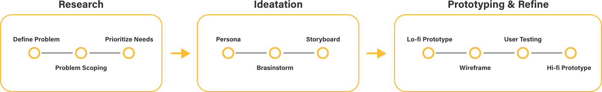
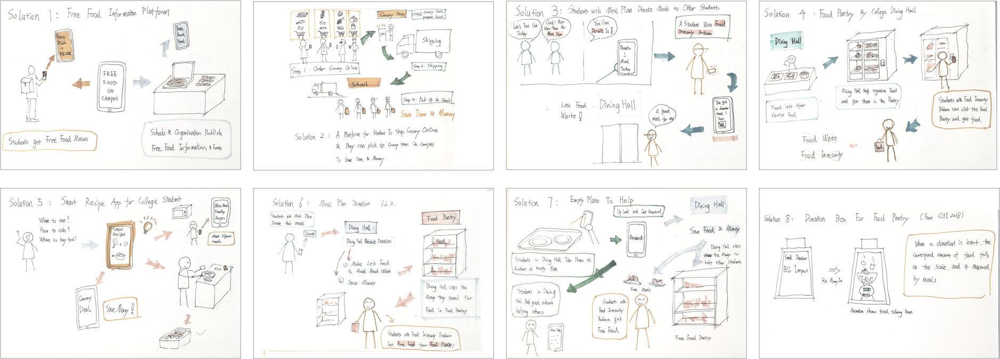
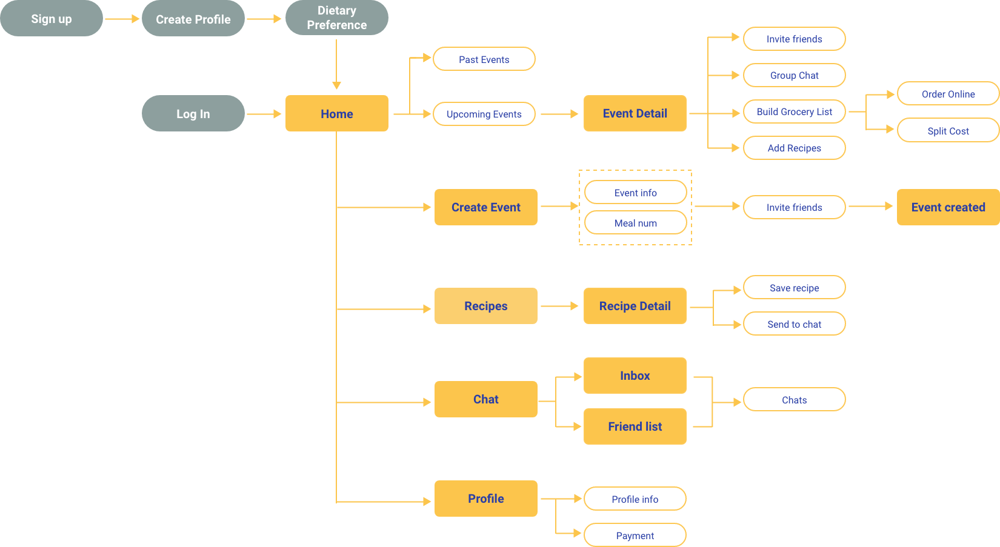
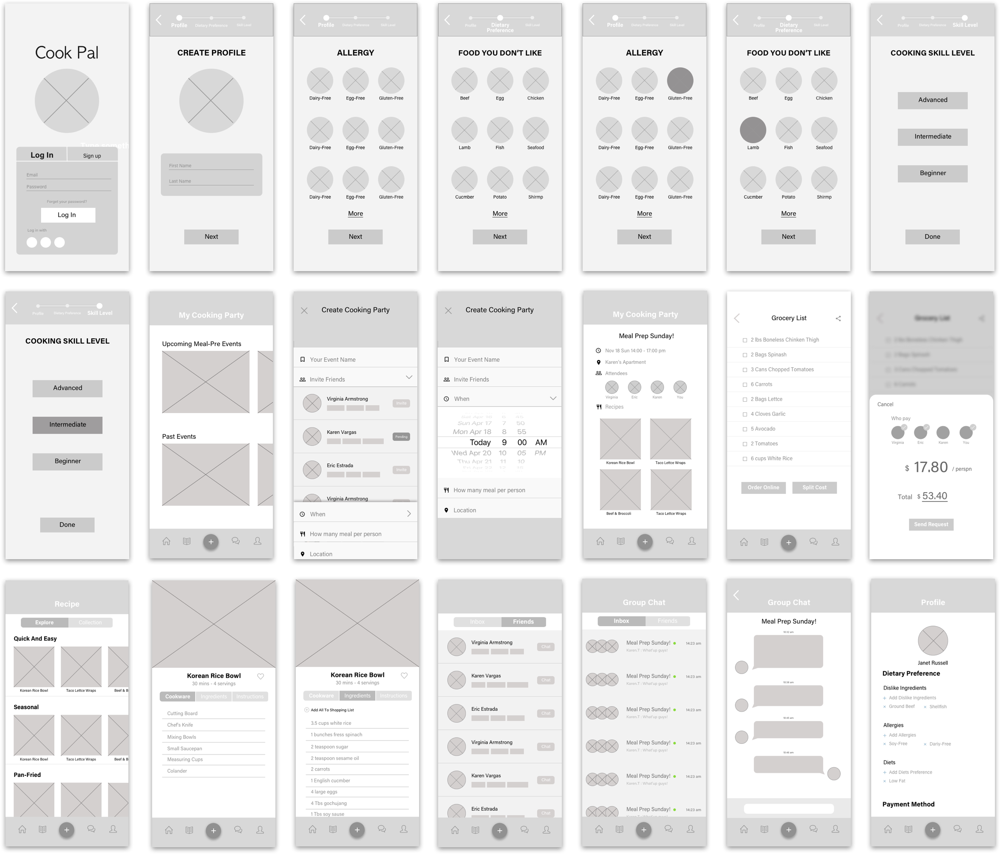
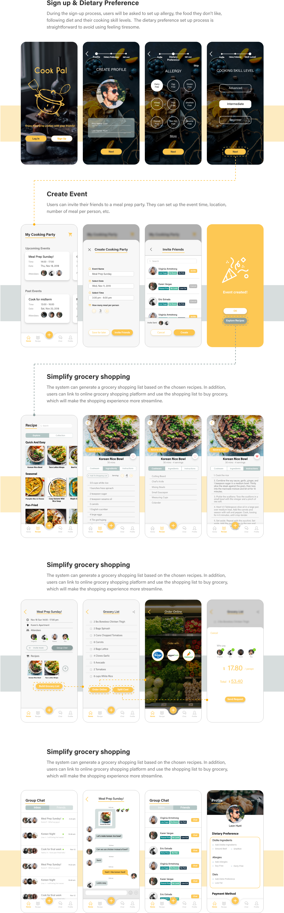

Cook Pal
A mobile app that helps college students creating meal-prep events, making meal-prep a fun and social activity
Project Type
Solo project of interaction design course
Role
It's a solo project that I researched, ideated and prototyped the entire user flow and interface
Duration
Fall 2018 (3 months)
Skills
Wireframing, Storyboard, Prototyping, Personas, Sketching, Competitive Analysis
Challenge
How to make meal-prep accessible for busy college students?
People enjoy not only the cooking but also the social contact between people from. However, gathering busy college students for a good cooking party and organize recipes and shopping list is difficult even with existing social media services.
Design Overview
Testing with users along the design process enables me to identify spaces for improvement and refine my design for better usability and experience that caters to users’ needs. Some examples include:
1. Reduce cluttering
To avoid overwhelming users with input fields, I reduced the number of fields and left customization in later flow.
“It seems there are so many to fill in before I can find people to play with.”
2. Improve flexibility
Inclusive time window was added to improve flexible scheduling.
“I hope I can make the time for game less rigid and welcome drop in during a flexible time frame.”

3. Maximize ability of game customization
Searching and customizing games with #keywords was inspired from users’ feedback to enhance the matching experience.
“I hope I can create a girls-only game.”
4. Improve flexibility
Inclusive time window was added to improve flexible scheduling.
“I hope I can make the time for game less rigid and welcome drop in during a flexible time frame.”
Design Process
Iterate for real needs
CookPal is a mobile app design of a semester-long solo project. I conducted the end-to-end research and design process, from conducting interviews to validating design decisions by testing with target users. My design evolved along several rounds of iteration at different stages.
Research
Needfinding to frame the problem
Interview
After deciding my focused design approach, I conducted one-on-one interviews with 5 college students, including 3 graduate students and 2 undergraduate students who prepare their meals weekly. I asked them certain questions to identify their pain points. I have three key takeaways from these interviews.
Meal prep sometimes is overwhelming
Grocery shopping is time-consuming
It is tiring to have the same meal for a couple days
Competitive Analysis
I took a careful look at existing solutions within my context and analyzed their pros and cons in respect to supporting my target activity. I analyzed multiple existing meal planning apps such as Mealime, MealPrepPro, Lifesum and PlanToEat to exlpore insights.
What did I learn
1. Most apps focus on diet goals of users rather than time-consuming and the cost.
2. Some platforms limit the recipe number per plan.
3. There are few social contacts on these apps.
4. The apps commonly have a cost associated with premium content.
5. It is important to document the users’ dietary preference.
Personas
Understaning the users
I created Personas to represent a user group who face a similar problems. This gave me a clear picture of the user’s expectations and how they would like to use a product.
Ideation
Brainstorming solutions
I brainstormed 8 possible solutions to address the problem, without worrying so much about feasibility just yet. Rather, I concentrated on quantity and tried not to limit ideas to constraints.
Flow Diagram
Mapping and organizing information
Flow Diagram
Mapping and organizing information
Ideation
Brainstorming solutions
I brainstormed 8 possible solutions to address the problem, without worrying so much about feasibility just yet. Rather, I concentrated on quantity and tried not to limit ideas to constraints.
TAKEAWAY
I am my own users, but I am not like my users
My design problem stemmed from my personal experience and frustration. With users participating along my design process, I have gained more comprehensive understanding of different factors surrounding the problem to reduce my design bias. I also found the iterative approach extremely critical to my design, and prototyping rapidly played a role in the process. Getting feedback from real users helped me to validate the hypothesis and refine my design at all levels.
Thank you for making this far. Here is a gif for you